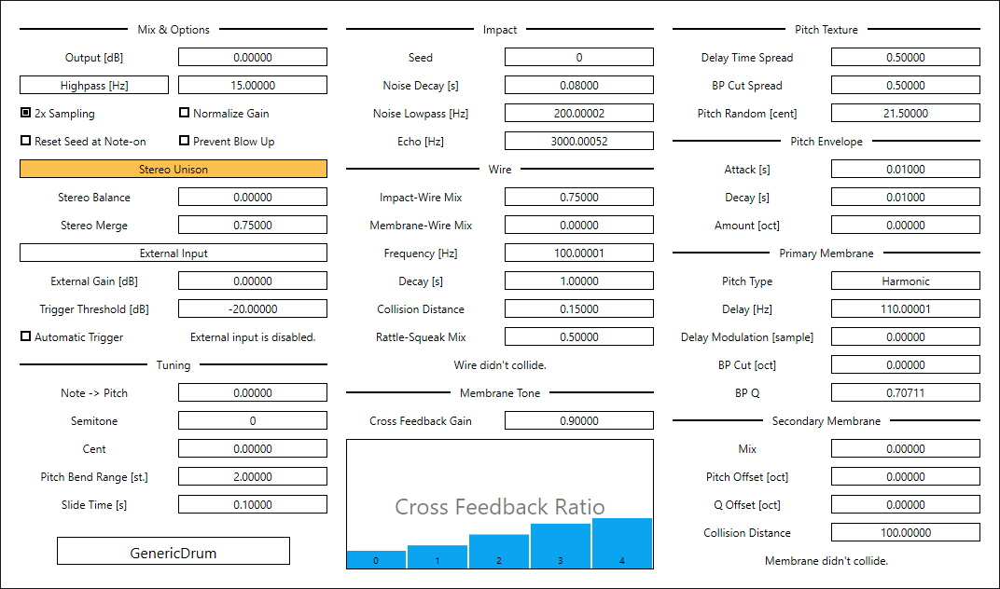
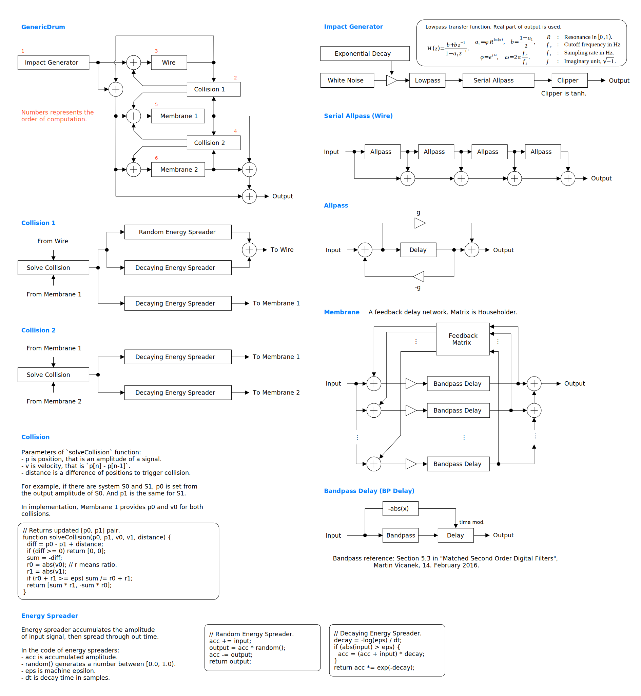

full - VST 3 をダウンロード (github.com) macOS - VST 3 をダウンロード (github.com) Update: 2025-08-30

GenericDrum はディレイを使った汎用ドラムシンセサイザです。バスドラムやスネアドラムについては良い音が出ます。シンバルの音も出せますが、低いドラムの音ほど良くはありません。
full - VST 3 をダウンロード (github.com) macOS - VST 3 をダウンロード (github.com) 重要: プリセットはサンプリング周波数が 48000 Hz でなければ想定された音が出ないことがあります。
full パッケージには次のビルドが含まれています。
Linux ビルドは Ubuntu 24.04 でビルドしています。もし Ubuntu 24.04 以外のディストリビューションを使っているときは、プラグインが読み込まれないなどの不具合が起こることがあります。この場合はビルド手順に沿ってソースコードからビルドしてください。
macOS で使用するときは macOS
パッケージのダウンロードを推奨します。また Apple Developer Program
に加入していないので、インストール時に Gatekeeper
を迂回するように設定する必要があります。詳細は
インストール -> macOS
の節を参照してください。
何かあれば GitHub
のリポジトリに issue を作るか ryukau@gmail.com
までお気軽にどうぞ。
paypal.me/ryukau から開発資金を投げ銭することもできます。
名前が .vst3 で終わるディレクトリを OS
ごとに決められた位置に配置してください。
/Program Files/Common Files/VST3/
に配置します。$HOME/.vst3/ に配置します。/Library/Audio/Plug-ins/VST3/ あるいは
/Users/$USERNAME/Library/Audio/Plug-ins/VST3/
に配置します。DAW によっては上記とは別に VST3 をインストールできるディレクトリを提供していることがあります。詳しくは利用している DAW のマニュアルを参照してください。
注意: プリセットの無いプラグインもあります。
プリセットはページの最上部のリンクからダウンロードできるプラグインパッケージに含まれています。以下はプリセットのインストール手順です。
presets ディレクトリ内の Uhhyou
ディレクトリを OS ごとに決められたディレクトリに配置。以下は OS ごとのプリセットの配置先の一覧です。
/Users/$USERNAME/Documents/VST3 Presets$HOME/.vst3/presets/Users/$USERNAME/Library/Audio/Presetsプリセットディレクトリの名前はプラグインと同じである必要があります。配置先のディレクトリが無いときは作成してください。
プラグインが DAW に認識されないときは C++ redistributable
をインストールしてみてください。インストーラは次のリンクからダウンロードできます。ファイル名は
vc_redist.x64.exe です。
Ubuntu 24.04 では次のパッケージのインストールが必要です。
sudo apt install libxcb-cursor0 libxkbcommon-x11-0もし DAW がプラグインを認識しないときは、下のリンクの
Package Requirements を参考にして VST3
に必要なパッケージがすべてインストールされているか確認してください。
REAPER の Linux 版がプラグインを認識しないときは
~/.config/REAPER/reaper-vstplugins64.ini を削除して
REAPER を再起動してみてください。
重要: full
パッケージは動作未確認です。以下のファイルは codesign
されていないので削除する必要があるかもしれません。
Contents/Resources/DocumentationContents/x86_64-linuxContents/x86_64-winmacOS
パッケージでは上記のファイルの削除は不要です。また、すべてのパッケージは
codesign コマンドの ad-hoc signing
の状態になっています。
プラグインの初回起動時に「破損している」という趣旨のメッセージが表示されることがあります。この場合は、ターミナルを開いて、解凍した
.vst3
ディレクトリに次のコマンドのどちらか、あるいは両方を適用してみてください。
/path/to/PluginName.vst3
の部分はインストールしたプラグインのパスに置き換えてください。
xattr -rd com.apple.quarantine /path/to/PluginName.vst3
xattr -rc /path/to/PluginName.vst3プラグインは署名されていない (unsigned) 、または公証されていない (un-notarized) アプリケーションとして認識されることがあります。この場合は、警告メッセージが表示された後に、システム環境設定を開いて「セキュリティとプライバシー」 → 「一般」の「このまま開く」ボタンを押してください。以下にリンクした Apple 公式のヘルプページにスクリーンショット付きで同じ手順が掲載されています。「ノータリゼーションを受けていない App や未確認の開発元の App を開きたい場合」を参照してください。
ここまでの手順を経てまだ動かないときはインストール先を
/Library/Audio/Plug-ins/VST3/ あるいは
/Users/$USERNAME/Library/Audio/Plug-ins/VST3/
のいずれか使っていなかったほうに変えてみてください。
上記の方法がすべて上手くいかなかったときは以下の手順を試してみてください。
sudo spctl --master-disable
を実行。上記の手順を実行するとシステムのセキュリティが弱くなるので注意してください。元に戻すには以下の手順を実行してください。
sudo spctl --master-enable
を実行。codesign
の適用注意 この節の内容は macOS
パッケージには関連しないと考えられますが未検証です。 (GitHub の
issue)
full
パッケージを利用する場合は以下のコマンドを適用することで利用できるかもしれません。
sudo codesign --force --deep -s - /path/to/PluginName.vst3codesign の利用には Xcode
のインストールが必要となるかもしれません。
初回設定時は手動で次のファイルを作成してください。
/Users/ユーザ名/AppData/Roaming/UhhyouPlugins/style/style.json
。$XDG_CONFIG_HOME/UhhyouPlugins/style/style.json 。
$XDG_CONFIG_HOME が空のときは
$HOME/.config/UhhyouPlugins/style/style.json 。/Users/$USERNAME/Library/Preferences/UhhyouPlugins/style/style.json
。プラグインのウィンドウを閉じて開くたびに style.json
が読み込まれて更新されます。
既存の色のテーマを次のリンクに掲載しています。
style.json にコピペして使ってください。
style.json の設定例です。
{
"guiScale" : 1 ,
"fontFamily" : "Tinos" ,
"fontBold" : true ,
"fontItalic" : true ,
"foreground" : "#000000" ,
"foregroundButtonOn": "#000000" ,
"foregroundInactive": "#8a8a8a" ,
"background" : "#ffffff" ,
"boxBackground" : "#ffffff" ,
"border" : "#000000" ,
"borderCheckbox" : "#000000" ,
"borderLabel" : "#000000" ,
"unfocused" : "#dddddd" ,
"highlightMain" : "#0ba4f1" ,
"highlightAccent" : "#13c136" ,
"highlightButton" : "#fcc04f" ,
"highlightWarning" : "#fc8080" ,
"overlay" : "#00000088",
"overlayHighlight" : "#00ff0033"
}guiScale: GUI の表示倍率。例えば 0.75
にすると 75% 、 2.0 にすると 200% 。guiScale の値の下限は 0.01
です。上限はほぼありません (64-bit float の最大値) 。
注意: guiScale
の倍率を大きくしすぎると、 DAW
によってはプラグインウィンドウの閉じるボタンがクリックできない位置に配置されてしまう、などといった問題が起きることがあります。
以下はフォントオプションの一覧です。
fontFamily: フォントファミリ名。fontBold: ボールドスタイル (太字) を
true で有効、 false で無効。fontItalic: イタリックスタイル (斜体) を
true で有効、 false で無効。カスタムフォントを使用するには、プラグインディレクトリの
*.vst3/Contents/Resources/Fonts に *.ttf
ファイルを配置します。
注意: fontFamily 、
fontBold 、 fontItalic
で設定したフォントファミリ名とスタイルの組み合わせが
*.vst3/Contents/Resources/Fonts 以下のいずれかの
*.ttf ファイルに含まれていないときは VSTGUI
が指定するデフォルトフォントが使用されます。
fontFamily が長さ 0 の文字列 ""
のときはフォールバックとして "Tinos"
に設定されます。長さが 1
以上かつ、存在しないフォントファミリ名が指定されると VSTGUI
が指定するデフォルトフォントが使用されます。
ボールドあるいはイタリック以外のスタイルは VSTGUI がサポートしていないので動作確認していません。該当する例としては Noto フォントの Demi Light や、 Roboto フォントの Thin や Black などがあります。
16 進数カラーコードを使っています。
プラグインはカラーコードの 1 文字目を無視します。よって
?102938 や \n11335577
も有効なカラーコードです。
2 文字目以降のカラーコードの値に 0-9a-f
以外の文字を使わないでください。
以下は設定できる色の一覧です。設定に抜けがあるとデフォルトの色が使われます。
foreground: 文字の色。foregroundButtonOn:
オンになっているボタンの文字の色。 foreground か
boxBackground
のいずれかと同じ値にすることを推奨します。foregroundInactive:
非アクティブなタブの文字の色。background: 背景色。boxBackground: 矩形の UI 部品の内側の背景色。border: 縁の色。borderCheckbox: チェックボックスの縁の色。borderLabel:
パラメータセクションのラベルの左右の直線の色。unfocused:
つまみがフォーカスされていないときの色。highlightMain:
フォーカスされたときの色。スライダの値の表示にも使用されます。highlightAccent:
フォーカスされたときの色。一部のプラグインをカラフルにするために使用されます。highlightButton:
ボタンがフォーカスされたときの色。highlightWarning: 変更に注意を要する UI
がフォーカスされたときの色。overlay: オーバーレイの色。overlayHighlight:
フォーカスを示すオーバーレイの色。パラメータが割り当てられているコントロールの上で 右クリック すると、 DAW から提供されるコンテキストメニューが開きます。
つまみと数値スライダでは次の操作ができます。
外部のリミッタと共に使用してください。パラメータの変更や、演奏時のベロシティによって大きくゲインが変わります。
パラメータの設定によっては発振あるいは発散することがあります。発振とは振幅が一定となって音が止まらない状態、発散とは時間とともに音が大きくなり続ける状態のことです。
発散すると最大で +40 dB ほどの振幅になることがあります。 GenericDrum は発散を検知すると自動でフィードバックを下げます。この仕組みはプライマリあるいはセカンダリの振幅が +40 dB を超えたときに起動します。
Prevent Blow Up
を有効にするとワイヤとプライマリの衝突による発散を大きく抑えることができます。ただし音の質感も大きく変わります。
Prevent Blow Up
が有効でも、ディレイ時間が短く、バンドパスの Q
が高く、フィードバックが大きいと発散します。以下は関連するパラメータの一覧です。
Note -> PitchCross Feedback GainCross Feedback RatioDelayBP QGenericDrum は物理モデルではありません。対応する物理現象が説明されていないからです。では何なのかというと、バイオリンで鳥の鳴き声をまねるように、ディレイでドラムの音をまねた芸術作品です。ここでの芸術とは人間が感覚でパラメータを設定したということを意味しています。
GenericDrum はバスドラムやスネアドラムなどの筒に膜が張ってある低めのドラムの音は得意ですが、シンバルのような薄い金属板の質感は苦手です。ドラムの膜の上に手を置いて擦るような演奏や、ハイハットのクローズのような衝撃とともに音を止める表現には対応していません。これは今後の課題です。
ドラムの音をまねるには、本物のドラムと似たような構造を作ればいいわけです。 GenericDrum は大まかに以下の部品に分けることができます。 () は対応する GUI 上のセクションを示しています。
ドラムは手やばちで打面を叩くことで音が出ます。 Impact
セクションでは、この叩く動作によって起きるノイズを生成します。音としてはホワイトノイズにローパスがかかった信号を生成します。また
Echo
によってドラムが揺れてスタンドなどと接触するときにでるカチャカチャという音をまねることができます。
ワイヤはスネアドラムのスナッピーを想定した部品で、プライマリと衝突するようになっています。中身は直列につながったディレイです。
Collision Distance
でプライマリとの衝突が起こる距離を変えることができます。これはスナッピーを裏面に近づけたり離したりという調節をまねています。また
Rattle-Squeak Mix
によって衝突の質感を変えることができます。特に squeak 側 (1.0)
に寄せるとクイーカに似た音が出せることがありますが、擦る量をうまく制御する仕組みはありません。
プライマリとセカンダリの打面には impact セクションからの衝突が等しく伝わります。この挙動は非現実的ですが、楽器としてはいい音が出ます。 1 つの打面は 1 つのフィードバックディレイネットワーク (FDN) からなります。 FDN のフィードバック経路にはバンドパスフィルタが設けられており、このバンドパスのカットオフ周波数と Q 、またディレイ時間の組み合わせによって打面の質感を変えることができます。特に Q を下げると明るい音になります。
FDN 内のフィードバック信号によってディレイ時間を変調することで、薄い膜の振動の非線形性をまねています。膜は揺れているときに伸び縮みしますが、定常状態から離れた分だけ内部的なストレスによって張力が一時的に増えるはずです。そして、張力が増えるということは音のピッチが上がることを意味します。これを FDN に当てはめると、フィードバックされた信号の振幅に応じてディレイ時間を短くすることでピッチを上げるという実装が考えられます。
衝突の計算には質量が等しい場合の完全弾性衝突を使っています。衝突後に通る
FDN
のフィードバック係数やバンドパスで振幅が減衰するので、衝突時に減衰を行わなくても音は止まります。また、衝突直後の振幅を溜め込んで、少しずつシステムに還流させることで、スネアドラムと似たような音が出るようにチューニングしています。ディレイは波の伝搬を近似できますが、伝搬の途中の状態は表現できません。したがって伝搬の途中で起こる衝突も表現できません。波の伝搬の途中で衝突が起こらないという癖は
Delay の値を低くすると顕著に現れます。
図が小さいときはブラウザのショートカット Ctrl + マウスホイール や、右クリックから「画像だけを表示」などで拡大できます。
図で示されているのは大まかな信号の流れです。実装と厳密に対応しているわけではないので注意してください。

角かっこ [] で囲まれているのは単位です。以下は単位の一覧です。
1 / (サンプリング周波数) 秒。1 / 12
オクターブ。1 / 100 半音。出力ゲインです。
出力の直前に通すことができるハイパスフィルタです。
警告: Highpass
のオン・オフを切り替えるとポップノイズが出ることがあります。
有効時に 2 倍のオーバーサンプリングを行います。
警告: 値を変更するとポップノイズが出ることがあります。
有効時に以下の値に応じてゲインを自動的に調節します。
Noise Lowpass 。有効時にノートオンのたびに衝突のノイズに使われる乱数のシードをリセットします。
チェックを外すと音がよれて人間味が出ます。
有効時にワイヤ周りのゲインを下げることで内部的な発散を抑えます。
ワイヤが発散すると爆発するように大きな音が出ます。
Prevent Blow Up
はこの爆発を抑えますが、副作用としてざらついた質感が消えた迫力のない音になりがちです。
Wire
セクションで以下の操作を行えば、多少ざらつきを出すことができます。
Decay を上げる。Collision Distance を下げる。Rattle-Squeak Mix を下げる。上記の操作を行った後に Prevent Blow Up
を無効にすると発散しやすい状態となっているので注意してください。
Stereo Unison
を有効にすると、左右のチャンネルで異なるワイヤ、プライマリ、セカンダリを使って計算を行います。ただし
CPU 負荷が約 2 倍に増えます。
左右のチャンネルのゲインを調整します。
パンとは異なり、左右のチャンネルはミックスされません。
ステレオの広がりを調整します。
External Input セクションには外部入力に関する設定が配置されています。
外部入力の使用には 2 つの場合分けがあります。
マイクからの入力を使う場合は Automatic Trigger
を有効にして、 Trigger Threshold
の値を調節してください。
他のシンセサイザを使う場合は、外部入力と共にノートイベントを
GenericDrum
と共有するようにルーティングすることで正確にノートオンを合わせることができます。このとき
Automatic Trigger は無効にしてください。
外部入力やノートイベントのルーティングは使用している DAW のマニュアルを参照してください。
外部入力のゲインです。
自動トリガのしきい値です。
有効時に自動トリガを有効にします。
Tuning セクションにはノートとピッチベンドに関するパラメータが配置されています。
ノートの音程によるピッチの変調量です。
Note -> Pitch の値によらず、音程が A3 (MIDI
ノート番号でいうと 57) のときにピッチの変調量が 0 となります。
Note -> Pitch の値が 0.0
のとき、ノートのピッチは無視されます。
Note -> Pitch の値が 1.0
のときに音程がピッチにそのまま反映されます。ただしドラムの音ははっきりとした音程を持たないのでチューニングがあっていないように聞こえることがあります。また、実装の都合により音が高くなるほどチューニングが狂います。
Note -> Pitch の値が -1.0
のとき、音程の上下が逆転します。
半音単位でノートの音程をトランスポーズします。
注意: Note -> Pitch が 0.0
のときは無効です。
セント単位でノートの音程をトランスポーズします。
注意: Note -> Pitch が 0.0
のときは無効です。
ピッチベンドの範囲です。単位は半音です。
2 つ以上のノートが同時に演奏されたときにピッチをスライドする大まかな時間です。
Impact セクションには、ばちと打面の衝突を模倣する部分のパラメータが配置されています。
乱数のシードです。
シードを変更すると、大まかな質感を維持しながら音を変えることができます。
GenericDrum
は衝突のノイズの生成と、内部的なパラメータの設定に使うための 2
つの乱数生成器を備えています。ノイズの生成については
Reset Seed at Note-on
によってノートオンごとにシードをリセットすることができます。
ノイズの大まかな減衰時間です。
ノイズが通過するローパスフィルタのカットオフ周波数です。
Normalize Gain の有効時は Noise Lowpass
の値が大きいほど音が小さくなります。
ノイズにかけるエコーの全長を表す周波数です。
このエコーはドラムとスタンドの衝突によるカチャカチャという音の表現のために備えられています。
Wire セクションにはスナッピーのような打面に接するワイヤを模倣する部分のパラメータが配置されています。
衝突のノイズと、ワイヤからの出力を混ぜる比率です。
0.0 で衝突のノイズのみ、 1.0 でワイヤからの出力のみとなります。
プライマリの打面と、ワイヤからの出力を混ぜる比率です。
0.0 でプライマリの出力のみ、 1.0 でワイヤからの出力のみとなります。
ワイヤ全体の周波数です。
ワイヤは 4 つの区間に分割されて計算されるので
Frequency
で設定した周波数だけが得られるわけではありません。
ワイヤ出力の大まかな減衰時間です。
警告: Prevent Blow Up の無効時は
Decay の値を上げると発散しやすくなります。
ワイヤとプライマリの衝突を判定するときに使われるしきい値です。
警告: Collision Distance
の値が小さいときは Decay
による十分な減衰がかかるまで、一時的に発散することがあります。発散を防ぐためには値を上げてください。
衝突の質感です。
Rattle-Squeak Mix の値が 0.0
のときはスナッピーがぶつかるざらついた音、 1.0
のときは打面を擦るような音が出ます。
警告: Prevent Blow Up の無効時は
Rattle-Squeak Mix の値が 0.0
に近づくほど発散しやすくなります。
Membrane Tone セクションには打面を表す FDN のフィードバックに関するパラメータが配置されています。 Membrane Tone セクションの設定はプライマリとセカンダリの両方で共有されます。
打面の音の減衰の速さを調整するゲインです。
警告: `Cross Feedback Gain が 1.0
に近づくと発振あるいは発散しやすくなります。
Cross Feedback Ratio
をノートオンごとにランダマイズする割合です。
0 のときは完全にランダム、 1 のときはランダマイズが無効になります。
打面のトーンを調整する値です。
Cross Feedback Ratio の値はハウスホルダー変換によって
FDN のフィードバック行列へと変換されます。
Cross Feedback Ratio の値がすべて 0.0 のとき FDN
内のディレイは互いにフィードバックをかけなくなります。このとき音のピッチは聞き取りやすくなりますが、薄い膜や板を叩いたような音としての質感は薄くなります。
Cross Feedback Ratio の値がすべて 1.0
のとき、薄い膜の振動のような質感に近くなります。ただし Primary
Membrane セクションの各値に応じて質感は大きく変わります。
Cross Feedback Gain や Collision Distance
の値をできる限り変えずに発振や発散を防ぐときは
Cross Feedback Ratio の値を変えると効果的です。
Pitch Texture セクションには打面を表す FDN の内部的なピッチに関するパラメータが配置されています。
FDN のディレイ時間の分布の幅です。
FDN のフィードバック経路に位置するバンドパスフィルタのカットオフ周波数の分布の幅です。
ランダムにピッチを変更する量です。
ピッチエンベロープは FDN のディレイ時間とバンドパスのカットオフ周波数を変調します。
エンベロープの大まかな立ち上がり時間です。
注意: Decay
の値より立ち上がりが長くなることはありません。
エンベロープの大まかな減衰時間です。
エンベロープによるピッチの変調量です。
FDN のディレイ時間の分布の種類です。
注意: - Reserved * -
を選択しないでください。 - Reserved * - は後で異なる
Pitch Type を追加するために予約された空のオプションです。
- Reserved * - が選択されたときは Harmonic
にフォールバックします。
FDN のディレイ時間の基準値です。
FDN 内では Delay
の周波数となるフィードバック経路が必ず一つは用意されますが、あくまでも目安となる値であり、正確なピッチを表すわけではありません。これは
FDN
内でフィードバックが交差することによるカオスな挙動が原因です。ピッチの変化は
Cross Feedback Ratio の設定に依存します。
FDN のフィードバックの振幅に応じてディレイ時間を変調する量です。
警告: Delay Modulation
の値が大きくなるほど発振あるいは発散しやすくなります。
Delay
で設定された周波数に対するプライマリのバンドパスのカットオフ周波数の比率です。
シンバルのような高い音を作るときには BP Cut
を上げると効果的です。
Delay Modulation によるバリつきをとって滑らかするには
BP Cut を下げると効果的です。
プライマリのバンドパスの Q 値です。
BP Q
が小さいと帯域幅が広くなるため、高く、長い音になります。ただし発振しやすくなります。逆に
BP Q
が大きいと帯域幅が狭くなるため、低く、短い音になります。
警告: BP Q
の値が大きくなるほど発振あるいは発散しやすくなります。
セカンダリは原則として Primary Membrane セクションの値を継承します。
プライマリと混ぜる比率です。 1.0 のときセカンダリからの出力だけが聞こえるようになります。
注意: 値を 0.0 あるいは 1.0
に設定しても衝突の計算は行われます。衝突を止めるには
Collision Distance の値を上げてください。
プライマリに対するピッチの比率です。
0.0 のときは Primary Membrane セクションと同じ値が使われます。
Pitch Offset と Q Offset
の調整は、スネアドラムの片面のチューニングをずらすような操作と似ています。
プライマリに対するバンドパスの Q の比率です。
プライマリとセカンダリの衝突を判定するときに使われるしきい値です。
警告: Collision Distance
の値が小さいときは発振することがあります。発振を防ぐためには値を上げてください。
Consistency パラメータを追加。GenericDrum のライセンスは GPLv3 です。 GPLv3 の詳細と、利用したライブラリのライセンスは次のリンクにまとめています。
リンクが切れているときは ryukau@gmail.com
にメールを送ってください。
VST is a trademark of Steinberg Media Technologies GmbH, registered in Europe and other countries.